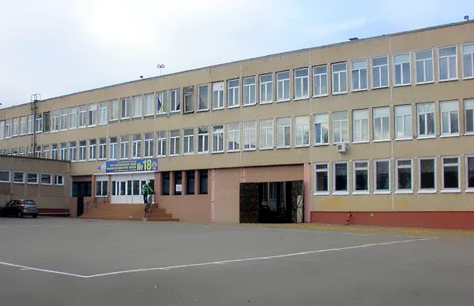
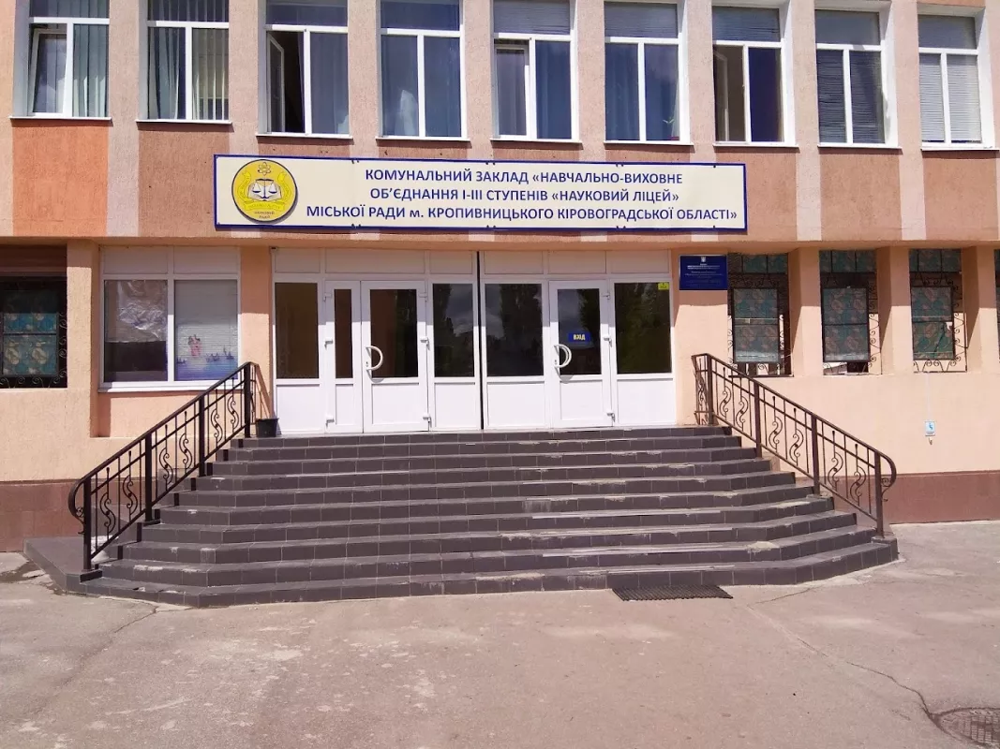

Вступ до початкової школи
Терміни зарахування
Основний період: З 1 квітня по 31 травня. До 1 червня видається наказ про зарахування дітей, які проживають на закріпленій за школою території або мають першочергове право (діти працівників школи, брати/сестри учнів, випускники дошкільних підрозділів).
Першочергове зарахування: До 1 червня зараховуються діти, які мають право на першочергове зарахування, навіть якщо не проживають на території обслуговування школи.
Додатковий період: З 16 червня до кінця навчального року. Заяви на вільні місця подаються в порядку надходження.
Необхідні документи
Заява : від одного з батьків або законного представника.
Паспорт : одного з батьків або законного представника дитини, з реєстрацією.
Свідоцтво про народження : дитини (оригінал для звірки, копія для справи).
Медична довідка : за формою № 086/о «Медічна довідка (витяг з медичної картки амбулаторного хворого)».
За бажанням батьків може додаватися висновок ІРЦ про комплексну психолого-педагогічну оцінку розвитку дитини.

